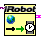

LabVIEW provides express VI's for controlling an iRobot, created by LabVIEW Hacker. This page will provide an introduction to controlling the iRobot from a labtop running LabVIEW 2014.
To install the iRobot LabVIEW express VI's, first open the LabVIEW VI package manager (VIPM), which can then be used to download and install the iRobot Create package.
Once installed, you should see the a new category for iRobot on the Front Panel and Block Diagram toolbars.
When the iRobot package was installed, a set of example VI's were also installed.
Here we will look at the drive in a square example to get started. The examples will typically be
located in the folder: C:\Program Files (x86)\National Instruments\LabVIEW 2014\examples\National Instruments\iRobot Create\Examples
Open the Example Square VI. This VI consists of a front panel with a UART port control, a max wheel speed for
robot velocity, and a side length to control the size of the square the robot will drive in. The block diagram
is shown below.
There are several iRobot express VI's used in the example. The UART port control passes a UART port such as "COM3" to the iRobot Create Open express VI . If there are no errors connecting and initializing the Create, the UART port is then passed into a Command Loop which corresponds most closely with a While loop. The Drive Sequence can be though of as a For loop, with the index looping from zero to one. When the index is zero the robot drive straight, when the index is one the robot turns. After the motor command is executed for a 120 milliseconds the sensors are polled  to determine if the robot has driven straight or turned for the desired amount.